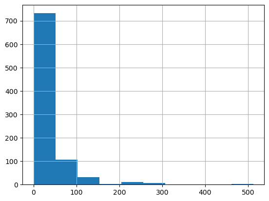
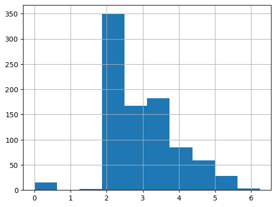
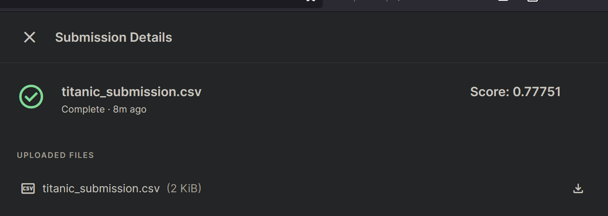

import torch, numpy as np, pandas as pd
1. Download Competition Data
import kaggle, zipfile
from pathlib import Path
path = Path("titanic")
if not path.exists():
print(f"{path} folder doesn't exist, downloading...")
kaggle.api.competition_download_cli(str(path))
zipfile.ZipFile(f"{path}.zip").extractall(path)
else:
print(f"{path} exists!")
!ls {path}titanic folder doesn't exist, downloading...
Downloading titanic.zip to /home/tonydevs/github/blog/posts/2024-04-21-deep_learning
gender_submission.csv test.csv train.csv100%|██████████| 34.1k/34.1k [00:00<00:00, 92.8kB/s]2. Clean Data
2.1 Read Training Data
df = pd.read_csv(path/"train.csv")2.2 Deal with NA’s
df.isna().sum() # find nasPassengerId 0
Survived 0
Pclass 0
Name 0
Sex 0
Age 177
SibSp 0
Parch 0
Ticket 0
Fare 0
Cabin 687
Embarked 2
dtype: int64modes = df.mode(axis=0).iloc[0] # get modes
df.fillna(modes, inplace=True) # replace nas with mode per col
df.isna().sum() # no more nas PassengerId 0
Survived 0
Pclass 0
Name 0
Sex 0
Age 0
SibSp 0
Parch 0
Ticket 0
Fare 0
Cabin 0
Embarked 0
dtype: int642.3 Deal with Numeric Data
df['Fare'].hist() # Not evenly spread
df['LogFare'] = np.log1p(df['Fare'])
df['LogFare'].hist() # more evenly spread
2.4 Deal with Categorical Data
df.nunique()
# [Pclass], [Sex] and [Age] variables only has 2-3 categories.
# A good choice to create dummy variablesPassengerId 891
Survived 2
Pclass 3
Name 891
Sex 2
Age 88
SibSp 7
Parch 7
Ticket 681
Fare 248
Cabin 147
Embarked 3
LogFare 248
dtype: int64df = pd.get_dummies(df, columns=["Sex", "Pclass", "Embarked"], dtype=int)
added_cols = ['Sex_male', 'Sex_female', 'Pclass_1', 'Pclass_2', 'Pclass_3', 'Embarked_C', 'Embarked_Q', 'Embarked_S']
indep_cols = ['Age', 'SibSp', 'Parch', 'LogFare'] + added_colsdf.nunique()
# [Sex], [Pclass] and [Embarked] dummy variables createdPassengerId 891
Survived 2
Name 891
Age 88
SibSp 7
Parch 7
Ticket 681
Fare 248
Cabin 147
LogFare 248
Sex_female 2
Sex_male 2
Pclass_1 2
Pclass_2 2
Pclass_3 2
Embarked_C 2
Embarked_Q 2
Embarked_S 2
dtype: int642.5 Normalise Numerical Data
idep_values_2d_tsr = torch.tensor(df[indep_cols].values, dtype=torch.float)
idep_values_2d_tsr[0:5] # Column 1 (20s) and Column 4 (2-4) are much larger than others (0-1).tensor([[22.0000, 1.0000, 0.0000, 2.1102, 1.0000, 0.0000, 0.0000, 0.0000,
1.0000, 0.0000, 0.0000, 1.0000],
[38.0000, 1.0000, 0.0000, 4.2806, 0.0000, 1.0000, 1.0000, 0.0000,
0.0000, 1.0000, 0.0000, 0.0000],
[26.0000, 0.0000, 0.0000, 2.1889, 0.0000, 1.0000, 0.0000, 0.0000,
1.0000, 0.0000, 0.0000, 1.0000],
[35.0000, 1.0000, 0.0000, 3.9908, 0.0000, 1.0000, 1.0000, 0.0000,
0.0000, 0.0000, 0.0000, 1.0000],
[35.0000, 0.0000, 0.0000, 2.2028, 1.0000, 0.0000, 0.0000, 0.0000,
1.0000, 0.0000, 0.0000, 1.0000]])maxes, _ = idep_values_2d_tsr.max(axis=0) # get max of each column
idep_norms_2d_tsr_mxn = idep_values_2d_tsr / maxes
idep_norms_2d_tsr_mxn[0:5] # values are normalised about 0-1tensor([[0.2750, 0.1250, 0.0000, 0.3381, 1.0000, 0.0000, 0.0000, 0.0000, 1.0000,
0.0000, 0.0000, 1.0000],
[0.4750, 0.1250, 0.0000, 0.6859, 0.0000, 1.0000, 1.0000, 0.0000, 0.0000,
1.0000, 0.0000, 0.0000],
[0.3250, 0.0000, 0.0000, 0.3507, 0.0000, 1.0000, 0.0000, 0.0000, 1.0000,
0.0000, 0.0000, 1.0000],
[0.4375, 0.1250, 0.0000, 0.6395, 0.0000, 1.0000, 1.0000, 0.0000, 0.0000,
0.0000, 0.0000, 1.0000],
[0.4375, 0.0000, 0.0000, 0.3530, 1.0000, 0.0000, 0.0000, 0.0000, 1.0000,
0.0000, 0.0000, 1.0000]])3. Training and Validation Sets
from fastai.data.transforms import RandomSplitter
dep_mx0 = torch.tensor(df["Survived"])
trn_idx, val_idx = RandomSplitter(seed=42)(idep_norms_2d_tsr_mxn)
trn_idep_mxn, val_idep_mxn = idep_norms_2d_tsr_mxn[trn_idx], idep_norms_2d_tsr_mxn[val_idx]
trn_dep_mx0, val_dep_mx0 = dep_mx0[trn_idx], dep_mx0[val_idx]
trn_dep_mx1 = trn_dep_mx0[:,None] # add extra dimention for matrix multiplies comparisons
val_dep_mx1 = val_dep_mx0[:,None]4. Deep Learning Neural Network
4.1 Initialise Coefficients
import torch.nn.functional as F
def init_coeffs():
n_coeffs = trn_idep_mxn.shape[1] # 12
hidden_layers = [10,10]
sizes = [n_coeffs] + hidden_layers + [1] # [12,10,10,1]
layers = [(torch.rand(sizes[i],sizes[i+1])-0.3)/sizes[i+1]*4 for i in range(len(sizes)-1)] # 0,1,2
consts = [(torch.rand(1)[0]-0.5)*0.1 for i in range(len(sizes)-1)] # [0,1,2]
for layer in layers+consts:
layer.requires_grad_()
return layers, consts4.2 Calculate Predictions
# i=1: [12,10] [nxq1] res1 = [713x12]@[12x10] = [713x10]
# i=2: [10,10] [q1xq2] res2 = [713x10]@[10x10] = [713x10]
# ...
# i=n: [10,1] [qnx1] resn = [713x10]@[10x1] = [713x1]
def calc_preds_deeplearning(trn_idep_mxn, coeffs):
layers, consts = coeffs
n = len(layers)
res = trn_idep_mxn
for i in range(n):
res = res@layers[i] + consts[i] # [mxn]@[nxq] [713x12][12x10]
if i!=n-1:
res = F.relu(res)
sgm_preds_mx1 = torch.sigmoid(res)
return sgm_preds_mx14.3 Calculate Loss
def calc_loss(idep_mxn, dep_mx1, coeffs):
preds_mx1 = calc_preds_deeplearning(idep_mxn, coeffs)
return torch.abs(dep_mx1-preds_mx1).mean()4.4 Update Coefficients and Constants
def update_coeffs(coeffs, lr):
layers, consts = coeffs
for layer in layers+consts:
layer.sub_(layer.grad*lr)
layer.grad.zero_()4.5 One Epoch
def one_epoch(coeffs,lr):
loss = calc_loss(trn_idep_mxn, trn_dep_mx1, coeffs)
loss.backward()
with torch.no_grad(): update_coeffs(coeffs, lr)
print(f"{loss:.3f}",end=';')4.6 Train Model with 30 Epochs
def train_model(n_epochs=30,lr=0.1):
torch.manual_seed(442)
coeffs = init_coeffs()
for _ in range(n_epochs):
one_epoch(coeffs,lr)
return coeffscoeffs = train_model(lr=4)0.521;0.483;0.427;0.379;0.379;0.379;0.379;0.378;0.378;0.378;0.378;0.378;0.378;0.378;0.378;0.378;0.377;0.376;0.371;0.333;0.239;0.224;0.208;0.204;0.203;0.203;0.207;0.197;0.196;0.195;5. Submit to Kaggles
5.1 Prepare Test-Set
tst_df = pd.read_csv(path/'test.csv')
tst_df['Fare'] = tst_df.Fare.fillna(0)
tst_df.fillna(modes, inplace=True)
tst_df['LogFare'] = np.log(tst_df['Fare']+1)
tst_df = pd.get_dummies(tst_df, columns=["Sex","Pclass","Embarked"], dtype=int)
tst_indep = torch.tensor(tst_df[indep_cols].values, dtype=torch.float)
tst_indep = tst_indep / maxes5.2 Predictions on Test-Set
tst_df['Survived'] = (calc_preds_deeplearning(tst_indep, coeffs)>0.5).int()5.3 Create Submission CSV
titanic_submission_df = tst_df[['PassengerId','Survived']]
titanic_submission_df.to_csv('titanic_submission.csv', index=False)kaggle.api.competition_submit(file_name='titanic_submission.csv',
message='20240420_tit_submission',
competition='titanic')Warning: Looks like you're using an outdated API Version, please consider updating (server 1.6.12 / client 1.6.6)100%|██████████| 2.77k/2.77k [00:00<00:00, 3.42kB/s]100%|██████████| 2.77k/2.77k [00:01<00:00, 1.82kB/s]Successfully submitted to Titanic - Machine Learning from Disaster
6. Success!
I’ve finally completed building my first deep-learning neural-network model from scratch and successfully submitting to Kaggle with 77.75% Accuracy.